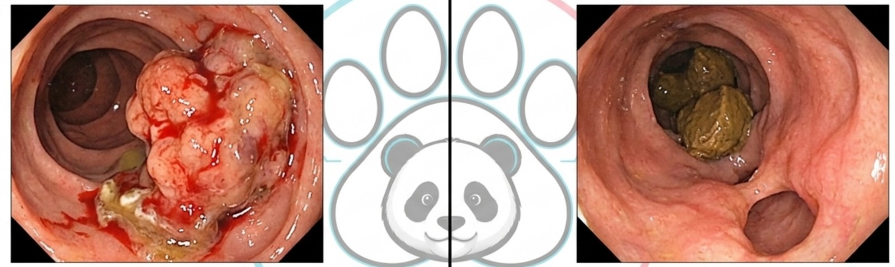

Neoplasias del colon: nombre completo y distribución por segmentos
Histología, nombres completos, segmentos y biomarcadores.
Fuentes rápidas del capítulo
Acceso directo a guías, artículos y revisiones internacionales utilizadas en este tema.
Para dar el «nombre y apellido» de una neoplasia se combinan tipo histológico, sitio anatómico y características adicionales. Por ejemplo: «adenocarcinoma del colon ascendente, moderadamente diferenciado». El segmento no determina la histología: un adenocarcinoma convencional, mucinoso u otra neoplasia puede aparecer en distintas zonas. La biopsia y la pieza quirúrgica establecen la clasificación. [1–3]
1. Tumoración, pólipo, neoplasia y carcinoma no son sinónimos
Tumoración describe una masa o abultamiento; puede ser neoplásica, inflamatoria o de otro origen. Pólipo describe una protrusión hacia la luz y puede corresponder a adenoma, lesión serrada u otras entidades. Neoplasia incluye lesiones benignas y malignas. Carcinoma es una neoplasia maligna epitelial; el adenocarcinoma muestra diferenciación glandular.
No se llama adenocarcinoma a cada masa endoscópica antes de confirmarla. Un pólipo grande puede contener áreas invasoras no capturadas por una biopsia superficial. A la inversa, ulceración o sangrado pueden corresponder a procesos no neoplásicos. La interpretación se construye con aspecto endoscópico, histología y extensión.
2. Tipos epiteliales: cómo nombrarlos correctamente
| Nombre | Característica conceptual | Dato útil para interpretar el informe |
|---|---|---|
| Adenocarcinoma convencional, sin otra especificación | Neoplasia maligna con diferenciación glandular | Es el tipo predominante del cáncer de colon. |
| Adenocarcinoma mucinoso | Abundante mucina extracelular; usualmente más de la mitad del tumor | No basta observar algo de mucina para asignar el subtipo. |
| Carcinoma de células en anillo de sello | Células con mucina intracelular que desplaza el núcleo; criterio de predominio | Si son focales puede describirse un componente, sin cambiar automáticamente todo el diagnóstico. |
| Carcinoma medular | Crecimiento sólido y rasgos particulares, con frecuente infiltrado linfocitario | Se asocia con frecuencia a deficiencia de reparación del ADN; requiere confirmación. |
| Adenocarcinoma serrado | Rasgos histológicos de una vía serrada | No significa que todo pólipo serrado sea cáncer. |
| Adenocarcinoma micropapilar | Pequeños grupos celulares con arquitectura micropapilar | Puede relacionarse con comportamiento agresivo; la estadificación sigue siendo esencial. |
| Carcinoma adenoescamoso | Componentes glandular y escamoso | Es infrecuente y requiere clasificación anatomopatológica. |
| Carcinoma indiferenciado y otras variantes raras | Ausencia o rasgos inusuales de diferenciación | Necesitan estudio especializado para excluir otras entidades. |
Las clasificaciones se actualizan y el informe debe utilizar la nomenclatura vigente. No hay que memorizar estas variantes como si cada una perteneciera exclusivamente a una flexura o a un segmento. La localización aporta probabilidades y clínica; la histología aporta identidad tumoral. [1]
3. Neoplasias que no son adenocarcinoma
Los tumores neuroendocrinos bien diferenciados (NET) se gradúan con actividad proliferativa y no son equivalentes al carcinoma neuroendocrino poco diferenciado (NEC), que puede ser de células pequeñas o grandes. Las neoplasias mixtas neuroendocrinas y no neuroendocrinas (MiNEN) necesitan evaluación de sus componentes. En recto pueden encontrarse NET pequeños bien diferenciados; eso no permite tratar igual un NEC del colon.
El linfoma, por ejemplo linfoma difuso de células B grandes o linfoma del manto, nace de tejido linfoide y exige inmunofenotipo. Puede comprometer región ileocecal, pero no queda limitado a ella. Los GIST, tumores del estroma gastrointestinal, son poco frecuentes en colon y requieren caracterización inmunohistoquímica y molecular; no son sinónimos de leiomiosarcoma. El leiomiosarcoma es otra neoplasia mesenquimal rara.
Los lipomas suelen ser benignos y pueden actuar como punto guía de intususcepción. También existen metástasis o invasión de un tumor de otro órgano. El tratamiento de linfoma, NET, NEC, GIST y adenocarcinoma puede ser muy diferente: por eso «parece tumor de colon» no es un diagnóstico final.
4. Mapa por segmento: nombres completos y tendencias clínicas
| Segmento | Ejemplos de nombre correcto | Tendencias clínicas y diagnósticos a considerar |
|---|---|---|
| Ciego | Adenocarcinoma del ciego; adenocarcinoma mucinoso del ciego | Anemia, masa, dolor; diferenciar lesión apendicular o ileal que compromete ciego y considerar linfoma ileocecal. |
| Ascendente | Adenocarcinoma del colon ascendente; carcinoma medular del colon ascendente | Sangrado oculto y anemia pueden preceder obstrucción. |
| Flexura hepática | Adenocarcinoma de la flexura hepática | Relación con duodeno, hígado y territorio vascular influye en extensión y cirugía. |
| Transverso | Adenocarcinoma del colon transverso; adenocarcinoma mucinoso del transverso | Clínica variable; localización exacta y pedículos importan. |
| Flexura esplénica | Adenocarcinoma de la flexura esplénica | Puede producir estenosis; drenaje y vascularización requieren valoración específica. |
| Descendente | Adenocarcinoma del colon descendente | Cambios del tránsito, hematoquecia u obstrucción en algunos casos. |
| Sigmoides | Adenocarcinoma del colon sigmoide; carcinoma de células en anillo de sello del sigmoide | Estenosis, sangrado o cambios de hábito; diferenciar enfermedad diverticular. |
| Unión rectosigmoidea | Adenocarcinoma de la unión rectosigmoidea | Definir si se sigue la estrategia de colon o recto mediante anatomía e imagen. |
| Recto | Adenocarcinoma de recto; tumor neuroendocrino bien diferenciado de recto | Entidad terapéutica propia: tacto, altura, RM pélvica y relación con esfínteres. |
Esta tabla muestra ejemplos de denominación, no exclusividad. Los mismos subtipos pueden aparecer en otras zonas. Ciego y ascendente no son una especie de tumor distinta por su nombre anatómico.
5. Derecha e izquierda: fisiología que cambia la presentación
El colon derecho suele tener mayor calibre y contenido más líquido. Una lesión puede crecer de manera exofítica y sangrar crónicamente sin obstruir de inmediato. El colon izquierdo contiene heces más formadas y puede desarrollar lesiones anulares que reducen la luz y alteran el tránsito. Son tendencias, no reglas: hay obstrucciones derechas y lesiones izquierdas que solo causan anemia.

Una deposición de menor calibre aislada no diagnostica cáncer. Anemia ferropénica no explicada, sangre persistente, pérdida de peso y cambios sostenidos del hábito intestinal requieren investigación según contexto. No se atribuye automáticamente el sangrado a hemorroides si existen datos de alarma.
6. Biología molecular: información distinta al «lado» del tumor
En promedio, determinados perfiles como deficiencia de reparación de errores del ADN y algunas alteraciones de BRAF son más frecuentes en el colon proximal. Esa asociación no permite inferir el resultado individual. Debe realizarse evaluación de MMR/MSI y otros biomarcadores cuando corresponda. En enfermedad avanzada, RAS, BRAF y otros estudios pueden orientar tratamiento junto con localización y características del paciente. [2,3]
dMMR significa deficiencia de reparación de errores de apareamiento; MSI-H indica alta inestabilidad de microsatélites. Pueden relacionarse con síndrome de Lynch o con mecanismos esporádicos. No todo dMMR es hereditario. La inmunohistoquímica, estudios moleculares y antecedentes familiares ayudan a distinguirlos.
7. Qué debe leerse en un informe anatomopatológico
Además del tipo y grado, importan profundidad de invasión, márgenes, invasión linfovascular y perineural, depósitos tumorales, budding cuando corresponde, número de ganglios examinados y afectados, y resultados de reparación del ADN. Un tamaño pequeño no garantiza estadio temprano: T se refiere principalmente a profundidad y extensión, no simplemente al diámetro.
Una biopsia endoscópica identifica el tipo, pero puede no definir toda la profundidad. La pieza de resección aporta evaluación más completa de T y N. Si se ha realizado tratamiento previo, se informa su efecto y se utilizan prefijos de estadificación apropiados. No se concluye que un tumor es de bajo riesgo solo porque está «bien diferenciado» sin revisar los demás datos.
Repaso final · BADBEAR.MED FIJA:
- El adenocarcinoma predomina, pero una masa del colon no es siempre adenocarcinoma.
- La zona cambia clínica, drenaje y operación; no asigna un subtipo exclusivo.
- Mucinoso y anillo de sello requieren criterios histológicos de predominio.
- NET bien diferenciado y NEC poco diferenciado no son la misma enfermedad.
- MMR/MSI se estudia; no se adivina por estar a derecha o izquierda.
- Recto forma parte del cáncer colorrectal, pero su evaluación local y tratamiento difieren del colon.
Bibliografía y material de apoyo
- College of American Pathologists. Cancer Protocols: Colon and Rectum, resection, biopsy y biomarker reporting; clasificación y elementos del informe. Protocolos vigentes.
- National Cancer Institute. Colon Cancer Treatment, PDQ, versión profesional. PDQ.
- National Cancer Institute. Genetics of Colorectal Cancer, PDQ. Genética.
- Material aportado a BADBEAR.MED, páginas 4–6. PDF aportado.
Material de estudio elaborado para la rotación. La atención clínica requiere valoración individual y protocolos del equipo tratante. Las imágenes del material aportado se utilizan como apoyo docente; no sustituyen un estudio clínico completo.